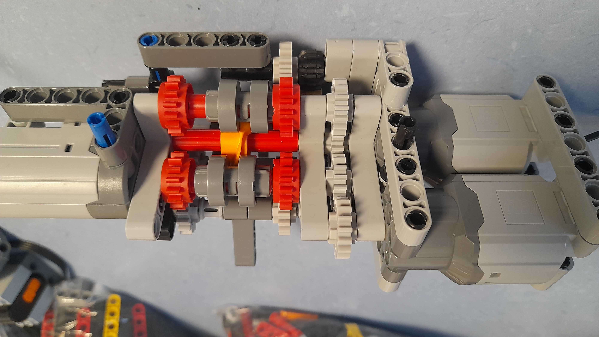

-
Sports
- Calisthénie : mon sport favori depuis 3 ans
- Tennis de table : dont je suis les compétitions activement
- Basket : qui m'a accompagné pendant 10 ans en club
-
Musique
- J'apprends à jouer de la guitare électrique à un niveau amateur en plus d'écouter beaucoup de musique
rock et métal
- J'apprends à jouer de la guitare électrique à un niveau amateur en plus d'écouter beaucoup de musique
-
Sciences
- Je regarde régulièrement des vidéos en anglais d'ingénierie, mathématiques et physique
Des sujets passionnants et infinis
- Je regarde régulièrement des vidéos en anglais d'ingénierie, mathématiques et physique
-
Mécanique
- Je construit des systèmes mécaniques tels que des moteurs, des pendules, supports ajustables, etc...
Ma prochaine idée est à découvrir dans la section 'Projets'

Cliquez sur l'image
- Je construit des systèmes mécaniques tels que des moteurs, des pendules, supports ajustables, etc...